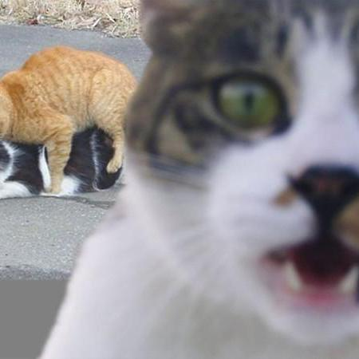

A PROGRAMMER
Tomi Taskov.
Programmer in many aspects — from gaming to AI.
Located near Sofia, Bulgaria
A PROGRAMMER
Programmer in many aspects — from gaming to AI.
Located near Sofia, Bulgaria
MORE ABOUT ME
SPECIALIZATION
PROJECTS
Reserved for next release.
Reserved for future project.
Reserved for future project.
Reserved for future project.